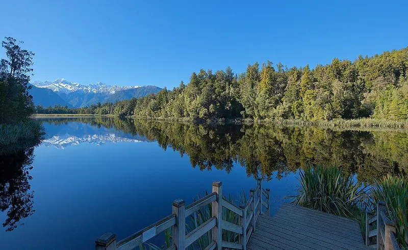
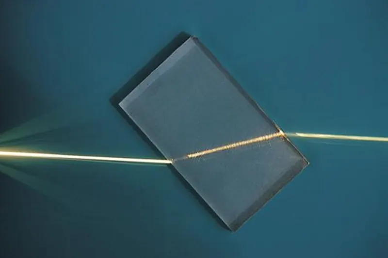
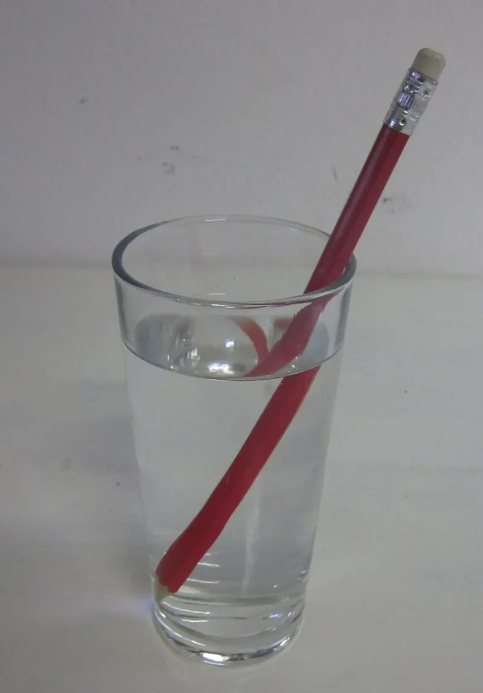

Cambridge Primary Checkpoint · Science 0097 · Stage 6 · Physics
Light: Reflection and Refraction
How a ray of light changes direction when it reflects from a plane mirror (angle of incidence = angle of reflection) and when it passes from one medium into another (refraction).
British & IGCSE › Checkpoint 6 › Checkpoint 6 Science — Complete Course
- Describe how a ray of light changes direction when it reflects from a flat (plane) mirror (6Ps.01).
- Describe how a ray of light changes direction when it passes from one material into another (for example from air into water or glass), and know that this is called refraction (6Ps.02).
1. Light travels in straight lines
Light comes from light sources such as the Sun, a lamp, a torch or a flame. Light travels in straight lines. We show the path of light with a ray: a straight line drawn with a ruler, with an arrow showing which way the light is going.
Most things around you are not light sources. You see a book because light from a source reflects (bounces) off the book and travels into your eyes. So in any diagram about seeing, the arrows must point from the source, to the object, and into the eye — never out of the eye.
| Word / phrase | Meaning / use |
|---|---|
| ray | شعاع — a straight line with an arrow showing the path of light |
| light source | مصدر ضوء — something that gives out its own light (the Sun, a lamp) |
| reflection | انعكاس — light bouncing off a surface |
| plane mirror | مرآة مستوية — a flat mirror |
| incident ray | الشعاع الساقط — the ray going towards the mirror |
| reflected ray | الشعاع المنعكس — the ray coming away from the mirror |
| normal | العمود المقام — an imaginary line at 90° to the surface where the ray hits |
| angle of incidence | زاوية السقوط — angle between the incident ray and the normal |
| angle of reflection | زاوية الانعكاس — angle between the reflected ray and the normal |
| medium (plural: media) | وسط — a material light travels through: air, water, glass |
| transparent | شفاف — lets light pass straight through (glass, clear water) |
| refraction | انكسار الضوء — light changing direction as it passes from one medium into another |
| periscope | البيريسكوب — a tube with two mirrors used to see over things |
2. Reflection from a plane mirror
When a ray of light hits a plane mirror it changes direction and bounces off. A plane mirror is very smooth, so it reflects light in a neat, predictable way. To describe the direction we draw the normal: a dashed line at 90° to the mirror at the point where the ray hits. Then we measure both angles from the normal.
angle of incidence = angle of reflection, both measured from the normal. The incident ray and the reflected ray are on opposite sides of the normal.
- A ray that hits the mirror along the normal (angle of incidence 0°) reflects straight back the way it came.
- A ray with a bigger angle of incidence gives an equally bigger angle of reflection: 20° → 20°, 55° → 55°.
- Smooth, shiny surfaces (mirrors, still water, polished metal) reflect light regularly, so you see a clear image. Rough surfaces (paper, cloth) scatter the light in all directions, so no image forms — but you can still see the paper because some of that scattered light reaches your eye.

How to draw a reflected ray — step by step
- Mark the point where the incident ray meets the mirror.
- Draw the normal with a ruler and protractor: a dashed line at 90° to the mirror through that point.
- Measure the angle of incidence between the incident ray and the normal (not the mirror).
- On the other side of the normal, measure the same angle and draw the reflected ray with a ruler.
- Add arrows: towards the mirror on the incident ray, away from the mirror on the reflected ray.
If a question gives the angle between the ray and the mirror surface, subtract it from 90° first. A ray at 70° to the mirror has an angle of incidence of 90° − 70° = 20°, so the angle of reflection is 20°.
3. Using mirrors: the periscope and mirror images
A periscope lets you see over a wall or out of a submarine. It is a tube with two plane mirrors, each at 45°. Light from the object hits the top mirror and is reflected down the tube (it turns through 90°). It then hits the bottom mirror and is reflected through 90° again, out into your eye.
Your image in a plane mirror is the same size as you, the same distance behind the mirror as you are in front, the right way up, but reversed left to right: lift your right hand and the image lifts its left hand. This is why some ambulances have the word AMBULANCE written backwards on the front — drivers in front read it the right way round in their mirrors.
4. Refraction: light bending between media
Light travels at different speeds in different media: fastest in air, slower in water, slower still in glass. When a ray passes from one transparent medium into another at an angle, the change of speed makes it change direction at the boundary. This bending is called refraction.
| The ray goes… | What happens |
|---|---|
| from air into glass or water (into a slower medium), at an angle | bends towards the normal |
| from glass or water into air (into a faster medium), at an angle | bends away from the normal |
| along the normal (hitting the surface at 90°) | goes straight on — no change of direction |

Refraction explains many everyday things:
- A straw in a glass of water looks bent or broken at the water surface.
- A swimming pool or a pond looks shallower than it really is — be careful before jumping in.
- Your legs look shorter when you stand in a pool.
- Lenses in glasses, magnifying glasses, cameras and microscopes are shaped so that refraction bends the light to make clear or bigger images.
- The "coin trick" below.

5. Reflection or refraction?
| Reflection | Refraction | |
|---|---|---|
| What happens | light bounces off a surface | light passes into a new medium and bends |
| Where the light ends up | back on the same side as it came from | on the other side of the boundary |
| Rule | angle of incidence = angle of reflection | towards the normal into glass/water; away from the normal into air |
| Examples | mirror, periscope, shiny spoon, still lake | bent straw, shallow-looking pool, lenses |
- الانعكاس (reflection): الضوء يخبط في المراية ويرجع. القاعدة: زاوية السقوط = زاوية الانعكاس، والزاويتين بتتقاسوا من العمود (normal) مش من المراية.
- لو الزاوية مدياها مع المراية نفسها، اطرحها من 90° الأول.
- الانكسار (refraction): الضوء يعدّي من وسط لوسط (هوا ← مية أو زجاج) فيتكسر ويغير اتجاهه لأن سرعته بتتغير.
- داخل للزجاج أو المية: يقرّب من العمود. خارج للهوا: يبعد عن العمود. لو داخل على العمود بالظبط: يكمل مستقيم.
6. Worked examples
Worked example 1 — A ray of light hits a plane mirror. The angle of incidence is 35°. (a) What is the angle of reflection? [1] (b) What is the angle between the incident ray and the reflected ray? [1]
Answer: (a) 35° (angle of incidence = angle of reflection). (b) Both angles are measured from the normal on opposite sides, so the total is 35° + 35° = 70°.
Worked example 2 — A ray makes an angle of 60° with the surface of a mirror. Work out the angle of reflection. Show your working. [2]
Working: angle of incidence = 90° − 60° = 30° (1 mark). Angle of reflection = angle of incidence = 30° (1 mark). Common mistake: answering 60° — that angle is measured from the mirror, not the normal.
Worked example 3 — Explain how a periscope lets Karim see a football match over a high wall. [2]
Answer: Light from the match hits the top mirror and is reflected down the tube (1 mark). It is then reflected by the bottom mirror, out of the tube into Karim's eye (1 mark). (Extra detail that shows understanding: the mirrors are at 45°, so each turns the light through 90°.)
Worked example 4 — A ray of light travels from air into a glass block at an angle. Ring the correct word in each sentence. [2]
- The ray bends towards / away from the normal as it enters the glass. → towards (it slows down).
- The ray bends towards / away from the normal as it leaves the glass into the air. → away from (it speeds up).
- What is the name of this bending of light? → refraction.
Worked example 5 — Explain why a coin at the bottom of a cup appears when water is poured in. [2]
Answer: Light from the coin is refracted (bends) when it passes from the water into the air (1 mark). It bends away from the normal, so it passes over the rim of the cup and reaches the eye (1 mark). Common mistake: saying the coin "floats up" — the coin does not move, only the light changes direction.
Worked example 6 (investigation) — Hana shines a ray from a ray box at a plane mirror and measures the angles with a protractor.
| Angle of incidence (°) | 20 | 30 | 40 | 50 | 60 |
|---|---|---|---|---|---|
| Angle of reflection (°) | 20 | 31 | 40 | 49 | 45 |
- (a) Describe the pattern. [1] → The angle of reflection is (about) equal to the angle of incidence.
- (b) Which result is anomalous? [1] → 45° (for 60°) — it should be about 60°.
- (c) Suggest why 31° and 49° are not exactly 30° and 50°. [1] → small errors in drawing the ray or reading the protractor (the ray is quite wide).
- (d) How could Hana make her results more reliable? [1] → repeat each measurement and use a narrow ray / sharp pencil; repeat the anomalous one.
- Measuring angles from the mirror or the glass surface instead of from the normal.
- Drawing rays with no arrows, or with arrows coming out of the eye.
- Drawing rays freehand — always use a ruler; light travels in straight lines.
- Mixing up the words: reflection = bounces off; refraction = bends as it passes into a new medium.
- Saying a ray that enters glass along the normal is bent — at 90° to the surface it goes straight on.
- Getting "towards" and "away from" the normal the wrong way round. Into glass or water: towards. Out into air: away.
- Complete the ray diagram: draw the reflected ray with a ruler and protractor; add the normal and arrows.
- Give the angle: angle of reflection, the angle between the two rays, or the angle from a ray to the mirror (watch for the 90° trap).
- Ring the correct word / complete the sentence: towards / away from the normal; reflection / refraction.
- Explain an everyday effect: bent straw, shallow pool, coin trick, periscope — name the process and say where the light changes direction.
- Investigation with a ray box: describe the pattern in a results table, spot the anomalous angle, suggest improvements (repeat, use a narrow ray).
Practice
- Light travels in straight lines; draw rays with a ruler and arrows.
- Plane mirror: angle of incidence = angle of reflection, both measured from the normal.
- Angle given to the mirror? Subtract from 90° first.
- Refraction = light changing direction as it passes from one medium to another (air, water, glass).
- Into glass/water: bends towards the normal. Out into air: bends away from the normal. Along the normal: no bend.
- Uses and effects: periscope (two 45° mirrors), bent straw, shallow-looking pool, lenses.
All pages in this course
Start here
- Checkpoint 6 Science: The Test and How to Prepare
- Thinking and Working Scientifically: Investigations, Variables, Tables and Graphs
Biology
- The Heart and Circulatory System
- The Lungs and Respiratory System
- Human Reproductive System and Puberty
- Diseases, Hygiene and the Body's Defences
- Food Chains, Food Webs, Energy and Toxins
Chemistry
- Properties of Substances: Melting and Boiling Points, Gases, Conductors
- Reversible Changes and Dissolving
- Boiling and Evaporation
- Chemical Reactions: Reactants, Products and Evidence
Physics
- Mass, Weight and Gravity
- Force Diagrams and Forces on Moving Objects
- Floating and Sinking
- Light: Reflection and Refraction
- Electric Circuits, Symbols, Series and Parallel
Earth and space
Practice tests